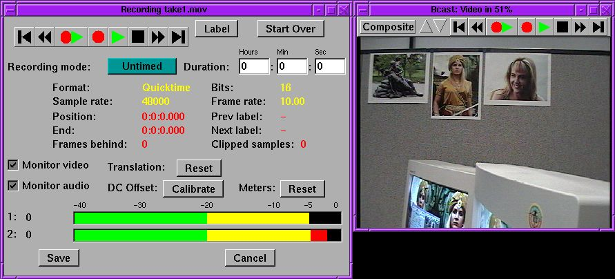
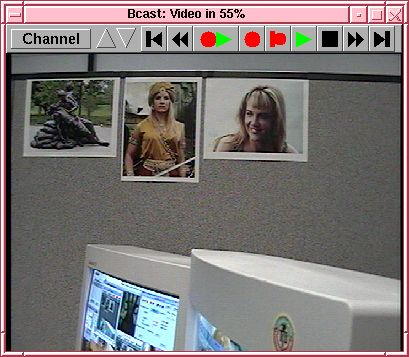
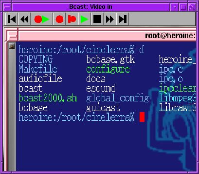
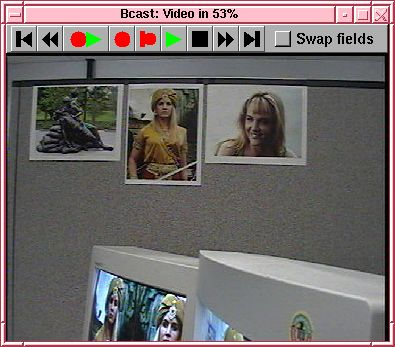
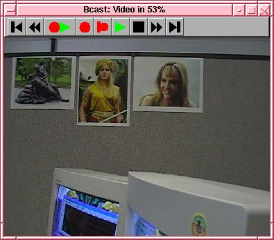

Hit the record button to bring up the record dialog. Here you select a format for the file you want to record to. You can't record directly to the timeline. You record to a file and the software automatically pastes your recording on the timeline.
You can record any combination of audio and video but only one track of video at a time. Specify the parameters of a file to record to then hit Do it. Most users have trouble understanding the format settings, which is why Broadcast 2000 uses a standard format dialog.
After the file format is specified you're presented the recording engine.

The samplerate, framerate, and frame size are taken from the project settings. The best way to change these is to cancel your current recording, go to File->new to create a new project with the desired settings. Then hit the record button again.
The recording engine changes appearance depending on whether you're recording audio or video. The record engine has VCR controls. The VCR controls provide record, rewind, fast forward, and preview. After recording a segment, you can rewind and preview it.
The full duplex button starts recording and playback from the timeline.
The label button inserts a label the current recording position.
There are 3 different record modes. You can have the recording continue until you run out of hard drive space, stop after a specified time, or loop over a specified time infinitely.
Be aware that although you can loop video recordings all day and keep the commercials you like, there is no way to synchronize audio in a loop recording.
For recording video, the monitor window has different functions depending on what driver you're using.
VIDEO4LINUX
By pressing on the channel you get the channel table. Here you
must enter a channel for every TV station you want to see. Separate
channels are also required for alternative inputs. Composite and S-VHS
are alternative inputs. The channel window contains a picture
button. This allows you to adjust the color balance.
Video4linux also supports image translation. By holding the middle
mouse button and dragging, you translate the image. By holding the
shift key during the translation, you control the zoom.
The screen capture offers no channel box, but it relies heavily on your
ability to adjust the translation. By holding down the middle mouse
button and dragging, you control what portion of the screen is
captured. Your capture resolution is going to be limited because
AGP is only optimized for output.
The LML33 has one option for swapping fields. Since the LML33 tends to
inadvertently swap the field order, this option manually swaps the
field order back.
The LML33 supports only two resolutions: 720x480 for NTSC and 720x576
for PAL. It supports either composite or S-VHS inputs. The settings
must be supplied when you load the module. At Heroine Virtual we
usually load the module with
insmod lml33 screen_width=720 screen_height=480 bitrate=200000
video_input=1 video_output=1
Firewire under Linux is flakey. If it doesn't work, your first
strategy is to make sure the camcorder is generating a picture. If
it's generating a picture your second strategy is to quit recording and
reload the modules until it starts working. The resolution is fixed at
720x480 for NTSC and 720x576 for PAL.
The framerate should be 29.97 for NTSC and 25 for PAL. If you try a
lower framerate you'll get noise in the picture.
Firewire also has audio recording. If you selected firewire for
the audio input you won't record audio from a sound card but a digital
stream from the firewire card. You must be using 16 bit 48000 Hz for
the audio.
Start Broadcast 2000 with the -b flag for batch mode.
The next argument is a script file much like the included /usr/local/bast/record_script file.
This file contains all the options for starting a recording. If you
omit options, the defaults will be used, which can be quite
unpredictable.
The output file is overwritten without question when recording from a
script. The script exits after the recording is started and returns
control to the user.

SCREENCAPTURE

LML33

FIREWIRE

SCRIPTED RECORDING
After many Xena episodes were missed for lack of unattended recording
features, scripted recording was implemented. Broadcast 2000 can
configure an output file and start recording with a single command line
invocation.